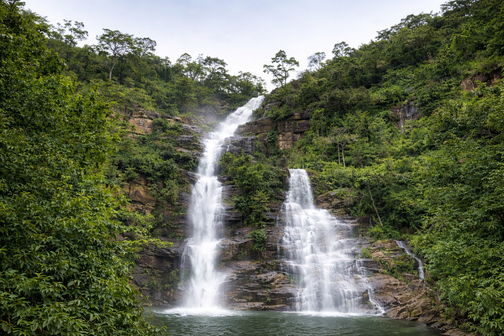

Lomé
25k
Grand Marché de Lomé
Le royaume des célèbres "Nana Benz"

RetourLa perle du golfe de Guinée, terre de diversité
Le Togo est souvent décrit comme l'Afrique en miniature en raison de la diversité incroyable de ses paysages et de ses cultures sur un territoire étroit. Des plages bordées de cocotiers de Lomé aux plateaux verdoyants de Kpalimé, en passant par les montagnes du nord et les célèbres Tatas Somba du Koutammakou, le Togo offre une hospitalité légendaire et une authenticité préservée.
Explorez les 15 merveilles du patrimoine togolais
Le royaume des célèbres "Nana Benz"

Les Tatas Somba, patrimoine de l'UNESCO

Paradis des randonneurs et des papillons

Navigation paisible et histoire spirituelle

La cité historique aux deux visages

Le point culminant du Togo (986m)

Le plus grand marché aux fétiches du monde

Une chute d'eau majestueuse de 80m

Le plus grand parc national du Togo

Architecture fortifiée traditionnelle

Faune sauvage préservée au nord du pays

Escale rafraîchissante sur la route de Kpalimé

Lieu historique du protectorat et apparitions mariales

Paysages escarpés et traditions des Kabyé

Sable fin et animations balnéaires
Un peuple fier, accueillant et enraciné.
Le Togo possède une mosaïque culturelle fascinante composée de plus de 40 ethnies. Des guerriers Kabyé du nord aux commerçants Ewe du sud, chaque peuple contribue à la richesse du pays. L'histoire du Togo est marquée par les influences coloniales successives mais surtout par la force de ses traditions, comme les luttes Evala ou les cérémonies Vaudou du littoral.
Rite de passage traditionnel chez les Kabyé, symbole de force et de courage.
Puissantes femmes d'affaires togolaises ayant bâti leur empire sur le commerce du Wax.
Les "Gardiens de la Nuit", société secrète protectrice de la communauté côtière.
Rythmes et danses traditionnelles qui animent chaque célébration de la vie.

Découvrez l'artisanat togolais. Des batiks colorés de Kpalimé aux sculptures sacrées, emportez un souvenir authentique.
 En stock
En stock
Tissu teint à la main représentant des scènes de vie africaine, fait par les artisans de Kpalimé.
 En stock
En stock
Céramique traditionnelle façonnée à la main et cuite au feu de bois selon des méthodes ancestrales.
 En stock
En stock
Masques et figurines sculptés dans du bois d'ébène véritable par les maîtres du centre artisanal.
Sélection de grains torréfiés artisanalement dans la région fertile des plateaux.
Colliers et bracelets raffinés utilisant des matériaux naturels de manière artistique.
Vannerie robuste et décorative réalisée par les communautés du nord-Togo.

Lomé, Centre CBD

Lomé, Bord de mer

Lomé, Près Aéroport

Plage, Lomé

Baguida, Lomé Est

Agbodrafo, Lac Togo
La cuisine togolaise est savoureuse et diversifiée. Elle repose sur les céréales, les tubercules et des sauces riches en arômes.
L'incontournable : igname pilée servie avec une sauce graine ou arachide.
Pâte de maïs ferme, base de nombreux repas togolais.
Riz et haricots cuits ensemble, un classique du petit-déjeuner.
Frites d'igname croustillantes, souvent vendues dans les rues.
Pâte de maïs à la tomate et aux épices, servie avec du poulet.
Petits gâteaux de riz à la vapeur, tendres et légèrement sucrés.
Pâte de maïs fermentée enveloppée dans des feuilles, servie avec du poisson frit.
Sauce gluante à base de feuilles vertes, délicieuse avec l'akoumé.
Fromage de vache traditionnel des Peuls, frit ou en sauce.
Ragoût riche à base de feuilles de gboma (épinards amers) et de viande.
Riz cuisiné avec de la tomate, des épices et de la viande ou du poisson.
Poisson frais grillé au charbon de bois, spécialité des bords de plage.
Le Togo vibre au rythme de festivals traditionnels qui marquent les saisons et l'histoire.
Célèbres luttes traditionnelles en pays Kabyé (Juillet), rite de passage des jeunes.
La plus grande fête traditionnelle du peuple Ewe, célébrée à Notsé (Septembre).
Grand rassemblement des cultures et spiritualités ancestrales (Aného).
La période idéale pour visiter tout le pays. Le temps est ensoleillé et sec, avec l'harmattan qui apporte un peu de fraîcheur la nuit.
Une accalmie dans les pluies au sud, idéale pour profiter des cascades et des paysages verdoyants des plateaux.
Le Togo est un pays sûr et accueillant. Les précautions d'usage s'appliquent dans les zones urbaines denses. Respectez les autorités.
Vaccin fièvre jaune obligatoire. Traitement antipaludéen recommandé. Ne buvez que de l'eau capsulée.
Le Français est la langue officielle. L'Ewe (sud) et le Kabyé (nord) sont les langues nationales les plus parlées.
Franc CFA (XOF). Les banques et distributeurs sont nombreux à Lomé. Le cash est roi dans les marchés.
Expert Culture & Lomé
Messan connaît Lomé comme sa poche. Il vous fera découvrir les secrets du Grand Marché et l'histoire de la capitale.
Guide Nature & Plateaux
Expert en randonnées à Kpalimé, Komi vous fera découvrir les cascades cachées et la biodiversité des montagnes.
Expert Nord & Koutammakou
Ali est le guide idéal pour explorer le nord-Togo et comprendre l'architecture unique des Tatas Somba.